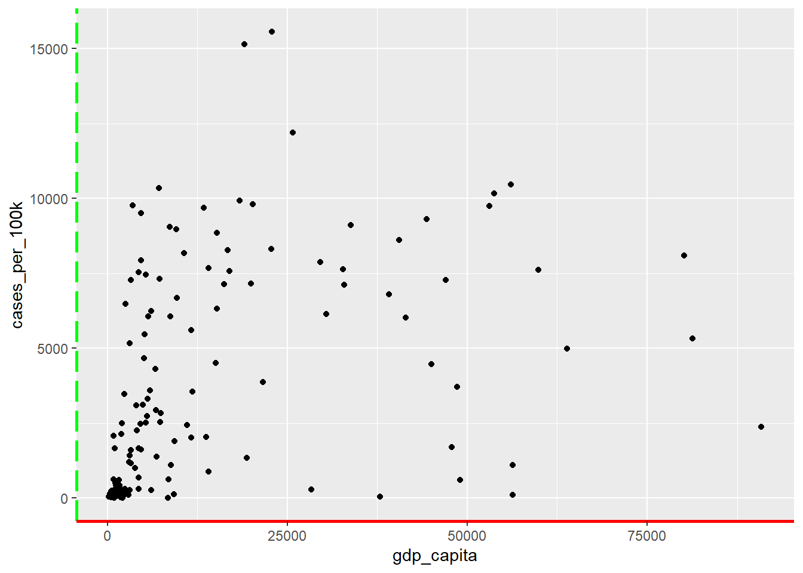
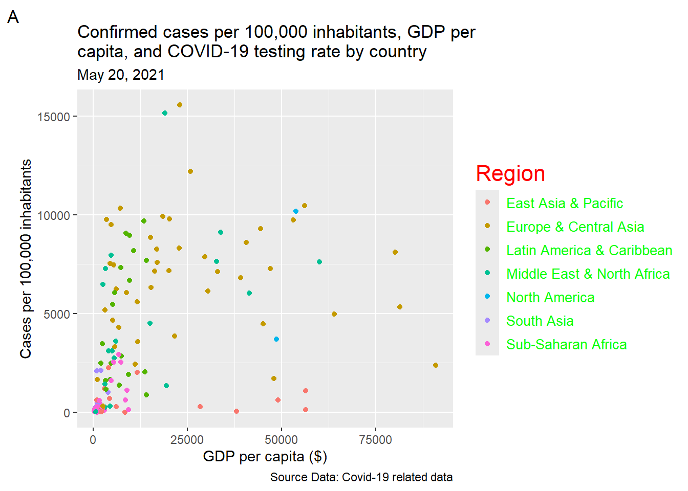
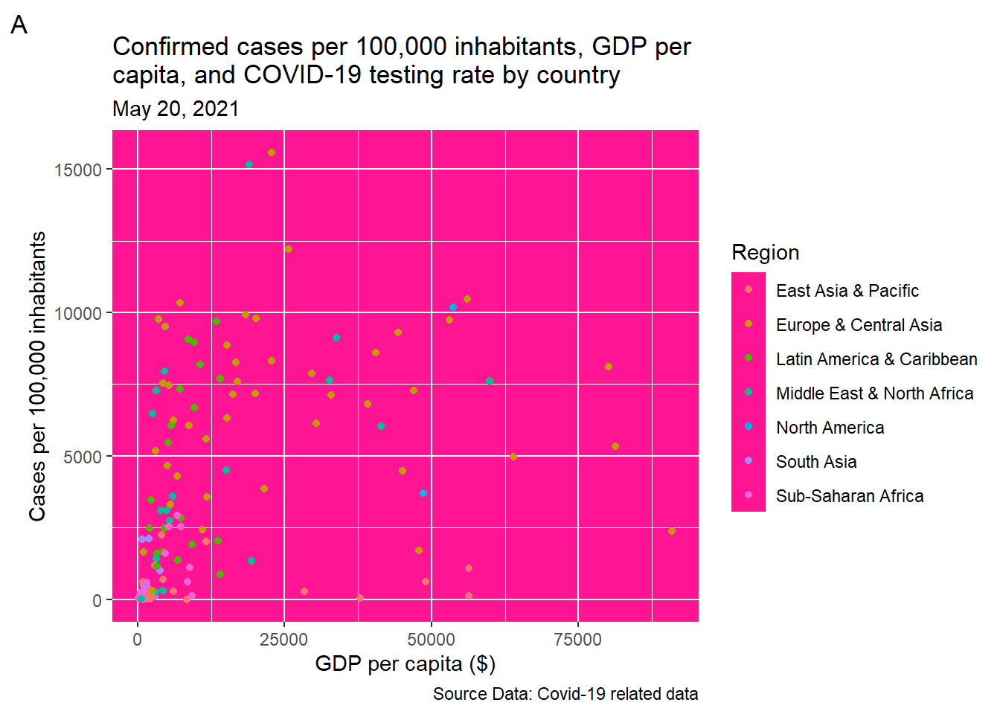
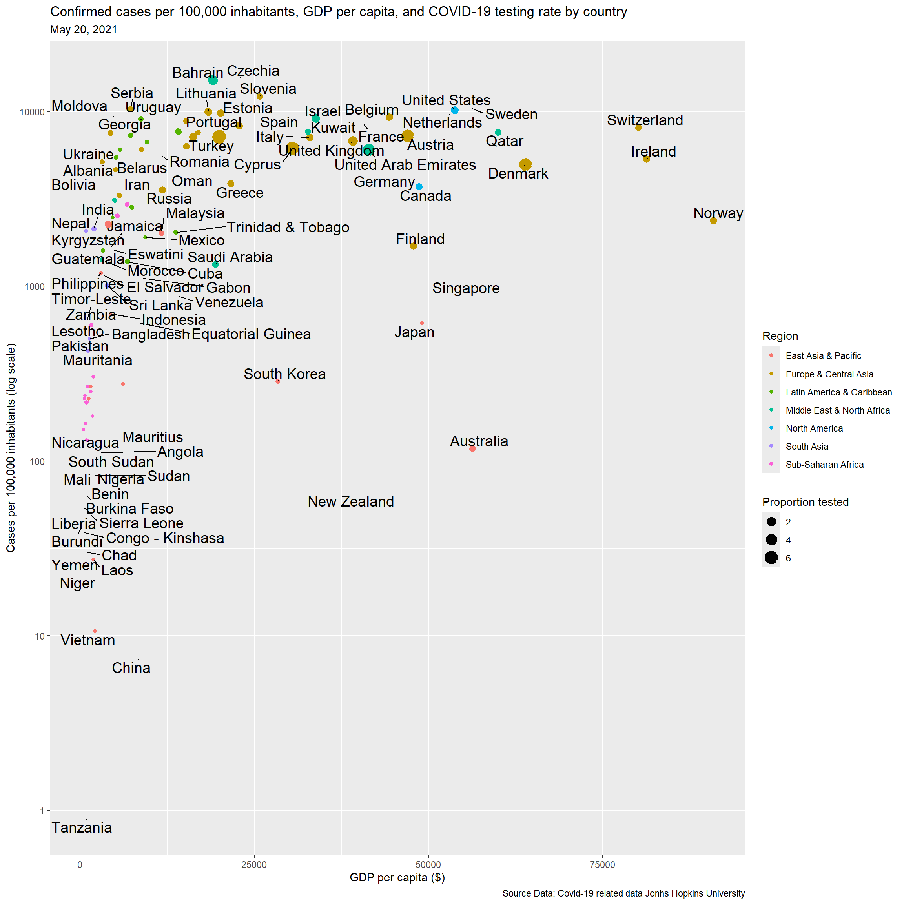
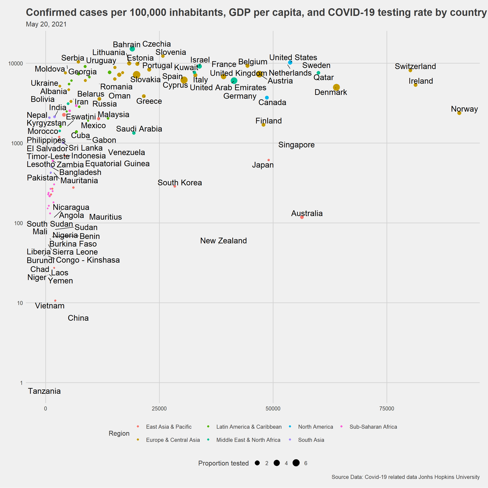

11 Data visualization with ggplot2
In this textbook, the ggplot2 package is the preferred tool for creating plots. With this tool and its extensions, R users can produce elegant, sophisticated, and professional-looking types of graphs that communicate results efficiently to the desired audience.
When we have finished this chapter, we should be able to:
11.1 Introduction to ggplot2
The main idea of ggplot2 is that any plot can be made up of the following principal components:
- data and coordinate system
- geometric objects such as points, bars, lines.
- aesthetic mappings that describe how variables are mapped to visual properties or aesthetics (e.g., color, size, shape) of the graph.
- themes that style all the visual elements which are not part of data.
The key to understanding ggplot2 is thinking about a figure in multiple layers.
11.2 Covid-19 data
In this Chapter, we will explore graphically the association between a country’s wealth and COVID-19 cases. However, there more variables that may be associated to both wealth and COVID-19 cases such as testing rate. For example, wealthier countries may have a national program to distribute tests for the virus, provide advice on how to apply a self-test and report the results to a national organization. Without the resources of wealthy countries to buy and distribute tests, a lack of reported cases in developing countries could indicate a scarcity of testing. In this case, using diagrams to depict multivariable associations may be helpful.
Let’s have a look at the types of variables:
glimpse(covid_data)Rows: 132,236
Columns: 12
$ iso3c <chr> "ABW", "ABW", "ABW", "ABW", "ABW", "ABW", "ABW", "ABW"…
$ country <chr> "Aruba", "Aruba", "Aruba", "Aruba", "Aruba", "Aruba", …
$ date <chr> "3/13/2020", "3/14/2020", "3/15/2020", "3/16/2020", "3…
$ confirmed <dbl> NA, NA, NA, NA, NA, NA, NA, NA, NA, NA, NA, NA, NA, NA…
$ deaths <dbl> NA, NA, NA, NA, NA, NA, NA, NA, NA, NA, NA, NA, NA, NA…
$ total_tests <dbl> NA, NA, NA, NA, NA, NA, NA, NA, NA, NA, NA, NA, NA, NA…
$ region <chr> "Latin America & Caribbean", "Latin America & Caribbea…
$ income <chr> "High income", "High income", "High income", "High inc…
$ population <dbl> 106766, 106766, 106766, 106766, 106766, 106766, 106766…
$ pop_density <dbl> 593.1, 593.1, 593.1, 593.1, 593.1, 593.1, 593.1, 593.1…
$ life_expectancy <dbl> 76.3, 76.3, 76.3, 76.3, 76.3, 76.3, 76.3, 76.3, 76.3, …
$ gdp_capita <dbl> 26631.5, 26631.5, 26631.5, 26631.5, 26631.5, 26631.5, …The data frame contains 132236 rows and 12 variables that are described as follows:
iso3c: ISO3c country code as defined by ISO 3166-1 alpha-3
country: Country name
date: Calendar date
confirmed: Confirmed Covid-19 cases as reported by JHU CSSE1 (accumulated)
deaths: Covid-19-related deaths as reported by JHU CSSE (accumulated)
total_tests: Accumulated test counts as reported by Our World in Data
region: Country region as classified by the World Bank (time-stable): East Asia & Pacific, Europe & Central Asia, Latin America & Caribbean, Middle East & North Africa, North America, South Asia, Sub-Saharan Africa.
income: Country income group as classified by the World Bank (time-stable)
population: Country population as reported by the World Bank (original identifier ‘SP.POP.TOTL’, time-stable)
pop_density: Country population density as reported by the World Bank (original identifier ‘EN.POP.DNST’, time-stable)
life_expectancy Average life expectancy at birth of country citizens in years as reported by the World Bank (original identifier ‘SP.DYN.LE00.IN’, time-stable)
gdp_capita: Country gross domestic product (GDP) per capita, measured in 2010 US-\(\$\) as reported by the World Bank (original identifier ‘NY.GDP.PCAP.KD’, time-stable)
1 JHU CSSE: Johns Hopkins Coronavirus Resource Center
Data preparation for the plots
The data cover a period from 1/1/2020 to 9/9/2021. Suppose we are interested in investigating countries with population more than 1 million up to June, 12 2021 and we want also to calculate the cases per 100000 inhabitants and tests per capita:
11.3 Basic steps for creating a ggplot graph
The ggplot2 is contained within the tidyverse package, so it is installed automatically when we install the tidyverse “meta” package. Furthermore, it is one of the core packages of the tidyverse that are loaded at R session when we run the command library(tidyverse).
Step 0: Start with a default blank ggplot object
ggplot()
Step 1: Add the dataset and define the x and y
The ggplot() function has two basic named arguments. The first argument, data, specifies the dataset that we are going to use for the plot. The second argument, mapping, defines which variables are mapped to x and y aesthetics of position.
Let’s provide the dataset “dat” to the first argument of ggplot() and mapp the variable gdp_capita to the x position and the variable cases_per_100K to the y position inside the aes():
ggplot(data = dat, mapping = aes(x = gdp_capita, y = cases_per_100k))
Note that we don’t usually have to spell out the names of the arguments data and mapping. Therefore, the following command is equivalent:
ggplot(dat, aes(x = gdp_capita, y = cases_per_100k))As we can observe, only a grey canvas is created when running the code. This is because we also need to provide a geometry!
Step 2: Add geometry
Geoms are the geometric objects that make up ggplot2 visualizations. Each geom is called with a function that begins with “geom_” and ends with the name of the geometric object (e.g., point, bar, line) (Table 11.1).
| geom_ | Example |
|---|---|
| geom_point() | |
| geom_line() |  |
| geom_text() |  |
| geom_label() | |
| geom_histogram() |  |
| geom_density() | |
| geom_bar() |  |
| geom_boxplot() |  |
Let’s select which style we want to use. We are interested in exploring the association between two numeric variables with a scatter plot (see also Chapter 26). So, we will add points using a geom layer called geom_point. In this case, geom_point() will inherit the x and y aesthetics from the ggplot() function:
ggplot(dat, aes(x = gdp_capita, y = cases_per_100k)) +
geom_point()
Step 3: Add aesthetics to geometry
Each “geom” has a number of aesthetics that define its visual properties. We can map our data to anything that our “geom” supports. For example, geom_point() understands the following aesthetics (required aesthetics are in bold): x, y, alpha, color, fill, group, shape, size, stroke.
So, if we want to add more variables to a plot, we can use aesthetics like color, shape, and size.
A. color aesthetics
Color is an important characteristic of graphs. If we decide to use color, we should consider which colors to use and where to use them. Color palettes (or colormaps) are classified into three main categories in ggplot2:
- Sequential (continuous or discrete) palette that is used for quantitative data. One variation of a unique color varying from dark to light (Figure 11.4).
- Diverging palette that creates a gradient between three different colors, allowing us to easily identify low, middle, and high values within our data (Figure 11.5).

- Qualitative palette that is used mainly for discrete or categorical data. This palette is consisted from a discrete set of distinct colors with no implied order (Figure 11.6).

Now, suppose we want to group the points according to the categorical variable region using different colors, as follows:
ggplot(dat, aes(x = gdp_capita, y = cases_per_100k)) +
geom_point(aes(color = region)) Here, we added inside the aes() the color argument. The data of the categorical variable region mapped to color aesthetic of geom_point. Obviously, the qualitative palette of colors was applied automatically by ggplot2. Additionally, ggplot automatically created a legend to show the correspondence between the regions and colors.
It is crucial to understand the difference between including the color2 argument inside or outside of the aes() function. For example, let’s run the following code:
2 ggplot2 understands both color and colour as well as the short version col.
ggplot(dat, aes(x = gdp_capita, y = cases_per_100k)) +
geom_point(color = "deeppink")In this case, we set the color argument to a fixed value (“deeppink”) in the geom function instead of using aes(), so ggplot changed the color of the points “globally”.
In R, colors can be specified in quotes either by name (e.g., "deeppink") or as a hexadecimal color (hex code) that starts with a # (e.g., "#FF1493"). In the following Table 11.2 we present an example of a color palette:
| Name | Hex code |
|---|---|
| \(\color{#FF7F50}{coral}\) | #FF7F50 |
| \(\color{#66CDAA}{aquamarine3}\) | #66CDAA |
| \(\color{#76EE00}{chartreuse2}\) | #76EE00 |
| \(\color{#FFFF00}{yellow}\) | #FFFF00 |
| \(\color{#0000FF}{blue}\) | #0000FF |
| \(\color{#A52A2A}{brown}\) | #A52A2A |
| \(\color{#FF1493}{deeppink}\) | #FF1493 |
| \(\color{#000000}{black}\) | #000000 |
The main advantage of the Hex color system is that it is very compact and we can pick out any color we desire.
B. shape aesthetics
Alternatively, we can group the points according to the region variable using different point shapes, as follows:
ggplot(dat, aes(x = gdp_capita, y = cases_per_100k)) +
geom_point(aes(shape = region))We observe that ggplot2 by default allows only six different point shapes to be displayed. However, we will see how to change this using appropriate scales.
The different points shapes symbols commonly used in R are shown in the Figure 11.7 below:
- The point shapes from 0 to 14 have an outline (we use
colorto change the color). - The point shapes from 15 to 20 are solid shapes (we use
colorto change color). - Point shapes options from 21 to 25 allow us to use both the outline and the inside color, so they can be controlled separately (we use
colorto change the color of the outline andfillto change the inside color).
The default geom_point() uses the shape symbol 19 that is a solid circle. If we decide to use a shape symbol between 21 and 25, we can set color and fill aesthetics to each point. The following examples help us understand how to set the color and fill arguments for the shape symbol 24 that is a triangle:
ggplot(dat, aes(x = gdp_capita, y = cases_per_100k)) +
geom_point(shape = 24)ggplot(dat, aes(x = gdp_capita, y = cases_per_100k)) +
geom_point(shape = 24, color = "red")ggplot(dat, aes(x = gdp_capita, y = cases_per_100k)) +
geom_point(shape = 24, color = "red", fill = "yellow")
C. size aesthetics
Next, we can add a third variable tests_per_capita using the size aesthetic:
ggplot(dat, aes(x = gdp_capita, y = cases_per_100k)) +
geom_point(aes(size = tests_per_capita))11.4 Add a new geom (text information for each point)
Let’s add the name of the country for each data point. The geom_text_repel() function from the add-on package ggrepel allow us to add text labels for each data point that repel away from each other to avoid overlapping of the text.
ggplot(dat, aes(x = gdp_capita, y = cases_per_100k)) +
geom_point(aes(size = tests_per_capita)) +
geom_text_repel(aes(label = country), seed = 123)11.5 Change the default properties of the plot with scales
Change the scale of the y axis
ggplot(dat, aes(x = gdp_capita, y = cases_per_100k)) +
geom_point(aes(size = tests_per_capita)) +
geom_text_repel(aes(label = country), seed = 123) +
scale_y_log10()Continuous variable tests_per_capital mapped to size and categorical variable region mapped to color.
Change the default point shapes
# default
ggplot(dat, aes(x = gdp_capita, y = cases_per_100k)) +
geom_point(aes(size = tests_per_capita, shape= region)) +
geom_text_repel(aes(label = country), seed = 123) +
scale_y_log10()
# modified
ggplot(dat, aes(x = gdp_capita, y = cases_per_100k)) +
geom_point(aes(size = tests_per_capita, shape= region)) +
geom_text_repel(aes(label = country), seed = 123) +
scale_y_log10() +
scale_shape_manual(values = c(4, 9, 2, 1, 0, 19, 8))However, when a variable is mapped to size (here, test_per_capital), it’s a good idea to not map a variable to shape (here, region). This is because it is difficult to compare the sizes of different shapes (e.g., a size 4 square with a size 4 triangle).
Change the default colors
# default
ggplot(dat, aes(x = gdp_capita, y = cases_per_100k)) +
geom_point(aes(size = tests_per_capita, color = region)) +
geom_text_repel(aes(label = country), seed = 123) +
scale_y_log10()
# modified
ggplot(dat, aes(x = gdp_capita, y = cases_per_100k)) +
geom_point(aes(size = tests_per_capita, color = region)) +
geom_text_repel(aes(label = country), seed = 123) +
scale_y_log10() +
scale_color_jco()11.6 Modify axis, legend, and plot labels with labs
ggplot(dat, aes(x = gdp_capita, y = cases_per_100k)) +
geom_point(aes(size = tests_per_capita, color = region)) +
geom_text_repel(aes(label = country), seed = 123) +
scale_y_log10() +
scale_color_jco() +
labs(x = "GDP per capita ($)",
y = "Cases per 100,000 inhabitants",
color = "Region",
size = "Proportion tested",
title = "Confirmed cases per 100,000 inhabitants, GDP per \ncapita, and COVID-19 testing rate by country",
subtitle = "May 20, 2021",
caption = "Source Data: Covid-19 related data from {tidycovid19} package",
tag = 'A')
11.7 Modify theme elements with theme
Theme elements are the non-data elements of a graph such as:
- line
- text
- title, subtitle, caption
- grid (major, minor)
- background
- ticks
theme() function
The default display of theme elements can be override by using the theme() function which has two parts in structure, an element name and an element function in a form similar to:
theme(element name = element_function(arguments))
Element name
We are able to modify the appearance of theme elements in plot, panel, axis, and legend compartments of a simple ggplot graph (Figure 11.10).
The theme system enables us to specify the display of elements for a particular compartment of the graph by creating element names in the general form of compartment.element. For example, we can specify the title in plot, axis, and legend with the element names plot.title, axis.title, and legend.title, respectfully.
Element function
Depending on the type of element that we want to modify, there are three pertinent functions that start with element_:
-
element_line(): specifies the display of lines -
element_text(): specifies the display of text elements -
element_rect(): specifies the display of borders and backgrounds
NOTE: (a) There is also the element_blank() that suppresses the appearance of elements we’re not interested in. (b) Other features of the graph, such as the position of legend, are not specified within an element_function.
Example
Suppose we want to change the color (from black to red) and the width of the x-axis line of our graph. The syntax would be similar to:
Next, we present some examples for each element function to help understanding of the previous concepts.
A. element_line()
With element_line(), we can customize all the lines of the plot that are not part of data. The Figure 11.12 shows the basic line elements (axes, ticks, and grids) that we can control in a simple ggplot graph.
1. The X and Y axes lines:
- both X and Y axes:
axis.line = element_line() - only X axis:
axis.line.x = element_line() - only Y axis:
axis.line.y = element_line()
Example
ggplot(dat, aes(x = gdp_capita, y = cases_per_100k)) +
geom_point() +
theme(axis.line.x = element_line(color = "red", linewidth = 1),
axis.line.y = element_line(color = "green", linewidth = 1, linetype = 5))
As we can observe, the default line type is a solid line (red x-axis line; linetype = 1). To change the line type, for example from solid to dashed line, we used the linetype = 3 option (green y-axis line) (Figure 11.14).
2. The ticks on X and Y axes:
- both X and Y ticks:
axis.ticks = element_line() - only X ticks:
axis.ticks.x = element_line() - only Y ticks:
axis.ticks.y = element_line()
Example
ggplot(dat, aes(x = gdp_capita, y = cases_per_100k)) +
geom_point() +
theme(axis.ticks.x = element_line(color = "red", linewidth = 5),
axis.ticks.y = element_line(color = "green", linewidth = 5))3. The major and minor grid lines of the panel:
Major grid
- major grid lines (vertical and horizontal):
panel.grid.major = element_line() - major vertical grid lines (cross
X):panel.grid.major.x = element_line() - major horizontal grid lines (cross
Y):panel.grid.major.y = element_line()
Example
ggplot(dat, aes(x = gdp_capita, y = cases_per_100k)) +
geom_point() +
theme(panel.grid.major.x = element_line(color = "red", linewidth = 0.55),
panel.grid.major.y = element_line(color = "green", linewidth = 0.55))Minor grid
- minor grid lines (vertical and horizontal):
panel.grid.minor = element_line() - minor vertical grid lines (cross
X):panel.grid.minor.x = element_line() - minor horizontal grid lines (cross
Y):panel.grid.minor.y = element_line()
Example
ggplot(dat, aes(x = gdp_capita, y = cases_per_100k)) +
geom_point() +
theme(panel.grid.minor.x = element_line(color = "red", linewidth = 0.35, linetype = 2),
panel.grid.minor.y = element_line(color = "green", linewidth = 0.35, linetype = 2))We can also modify the display of both major and minor grids of the ggplot.
Example
ggplot(dat, aes(x = gdp_capita, y = cases_per_100k)) +
geom_point() +
theme(panel.grid.major = element_line(color = "blue", linewidth = 0.55),
panel.grid.minor = element_line(color = "deeppink", linewidth = 0.35, linetype = 2))B. element_text()
1. The title of X and Y axes:
- X axis:
axis.title.x = element_text() - Y axis:
axis.title.y = element_text()
Example
ggplot(dat, aes(x = gdp_capita, y = cases_per_100k)) +
geom_point(aes(color = region)) +
labs(x = "GDP per capita ($)",
y = "Cases per 100,000 inhabitants",
color = "Region",
size = "Proportion tested",
title = "Confirmed cases per 100,000 inhabitants, GDP per \ncapita, and COVID-19 testing rate by country",
subtitle = "May 20, 2021",
caption = "Source Data: Covid-19 related data",
tag = 'A') +
theme(axis.title.x = element_text(color = "red", size = 18, angle = 10),
axis.title.y = element_text(color = "green", size = 10))Example
ggplot(dat, aes(x = gdp_capita, y = cases_per_100k)) +
geom_point(aes(color = region)) +
labs(x = "GDP per capita ($)",
y = "Cases per 100,000 inhabitants",
color = "Region",
size = "Proportion tested",
title = "Confirmed cases per 100,000 inhabitants, GDP per \ncapita, and COVID-19 testing rate by country",
subtitle = "May 20, 2021",
caption = "Source Data: Covid-19 related data",
tag = 'A') +
theme(axis.text.x = element_text(color = "red", size = 16, face="bold", angle = 90),
axis.text.y = element_text(color = "green", size = 10))
Example
ggplot(dat, aes(x = gdp_capita, y = cases_per_100k)) +
geom_point(aes(color = region)) +
labs(x = "GDP per capita ($)",
y = "Cases per 100,000 inhabitants",
color = "Region",
size = "Proportion tested",
title = "Confirmed cases per 100,000 inhabitants, GDP per \ncapita, and COVID-19 testing rate by country",
subtitle = "May 20, 2021",
caption = "Source Data: Covid-19 related data",
tag = 'A') +
theme(plot.title = element_text(color = "deeppink"),
plot.subtitle = element_text(color = "blue"),
plot.caption = element_text(color = "orange", size = 8),
plot.tag = element_text(color = "green", size = 20))Example
ggplot(dat, aes(x = gdp_capita, y = cases_per_100k)) +
geom_point(aes(color = region)) +
labs(x = "GDP per capita ($)",
y = "Cases per 100,000 inhabitants",
color = "Region",
size = "Proportion tested",
title = "Confirmed cases per 100,000 inhabitants, GDP per \ncapita, and COVID-19 testing rate by country",
subtitle = "May 20, 2021",
caption = "Source Data: Covid-19 related data",
tag = 'A') +
theme(legend.title = element_text(color = "red", size = 16),
legend.text = element_text(color = "green", size = 10))
C. element_rect()
Example
ggplot(dat, aes(x = gdp_capita, y = cases_per_100k)) +
geom_point(aes(color = region)) +
labs(x = "GDP per capita ($)",
y = "Cases per 100,000 inhabitants",
color = "Region",
size = "Proportion tested",
title = "Confirmed cases per 100,000 inhabitants, GDP per \ncapita, and COVID-19 testing rate by country",
subtitle = "May 20, 2021",
caption = "Source Data: Covid-19 related data",
tag = 'A') +
theme(plot.background = element_rect(fill = "deeppink"))Example
ggplot(dat, aes(x = gdp_capita, y = cases_per_100k)) +
geom_point(aes(color = region)) +
labs(x = "GDP per capita ($)",
y = "Cases per 100,000 inhabitants",
color = "Region",
size = "Proportion tested",
title = "Confirmed cases per 100,000 inhabitants, GDP per \ncapita, and COVID-19 testing rate by country",
subtitle = "May 20, 2021",
caption = "Source Data: Covid-19 related data",
tag = 'A') +
theme(panel.background = element_rect(fill = "deeppink"))
Example
ggplot(dat, aes(x = gdp_capita, y = cases_per_100k)) +
geom_point(aes(color = region)) +
labs(x = "GDP per capita ($)",
y = "Cases per 100,000 inhabitants",
color = "Region",
size = "Proportion tested",
title = "Confirmed cases per 100,000 inhabitants, GDP per \ncapita, and COVID-19 testing rate by country",
subtitle = "May 20, 2021",
caption = "Source Data: Covid-19 related data",
tag = 'A') +
theme(legend.background = element_rect(fill = "deeppink"))Example
ggplot(dat, aes(x = gdp_capita, y = cases_per_100k)) +
geom_point(aes(color = region)) +
labs(x = "GDP per capita ($)",
y = "Cases per 100,000 inhabitants",
color = "Region",
size = "Proportion tested",
title = "Confirmed cases per 100,000 inhabitants, GDP per \ncapita, and COVID-19 testing rate by country",
subtitle = "May 20, 2021",
caption = "Source Data: Covid-19 related data",
tag = 'A') +
theme(legend.key = element_rect(fill = "deeppink"))11.8 Themes
Default ggplot theme
The default theme of ggplot is the theme_gray:
ggplot(dat, aes(x = gdp_capita, y = cases_per_100k)) +
geom_point(aes(size = tests_per_capita, color = region)) +
geom_text_repel(aes(label = country),
min.segment.length = 0, seed = 42,
box.padding = 0.1, color = "black", size = 5) +
scale_y_log10() +
labs(x = "GDP per capita ($)",
y = "Cases per 100,000 inhabitants (log scale)",
color = "Region",
size = "Proportion tested",
title = "Confirmed cases per 100,000 inhabitants, GDP per capita, and COVID-19 testing rate by country",
subtitle = "May 20, 2021",
caption = "Source Data: Covid-19 related data Jonhs Hopkins University")
Predefined theme
We can customize the theme elements of our graph by applying a predefined theme rather than changing everything by hand. There are ready to use themes from the ggplot2 and ggthemes packages.
Examples of in-build theme from “ggplot2”:
- theme_bw() – dark on light ggplot2 theme
- theme_dark() – lines on a dark background instead of light
- theme_minimal() – no background annotations, minimal feel.
- theme_classic() – theme with no grid lines.
- theme_void() – empty theme with no elements
Examples of themes from “ggthemes”:
- theme_economist() – theme approximates the style of “The Economist”.
- theme_excel_new() – theme based on current Excel plot defaults.
- theme_fivethirtyeight() – theme inspired by FiveThirtyEight plots.
- theme_gdocs() – theme based on Google Docs Chart defaults.
- theme_hc() – theme based on Highcharts plots.
In our case, we will use the theme_fivethirtyeight() from the “ggthemes” to understand how we can handle default themes.
ggplot(dat, aes(x = gdp_capita, y = cases_per_100k)) +
geom_point(aes(size = tests_per_capita, color = region)) +
geom_text_repel(aes(label = country),
min.segment.length = 0, seed = 42,
box.padding = 0.1, color = "black", size = 5) +
scale_y_log10() +
labs(x = "GDP per capita ($)",
y = "Cases per 100,000 inhabitants (log scale)",
color = "Region",
size = "Proportion tested",
title = "Confirmed cases per 100,000 inhabitants, GDP per capita, and COVID-19 testing rate by country",
subtitle = "May 20, 2021",
caption = "Source Data: Covid-19 related data Jonhs Hopkins University") +
theme_fivethirtyeight()
If we take a look at the code for theme_fivethirtyeight (we just run theme_fivethirtyeight in our console to see the code), we’ll observe that axis.title is set to element_blank(). So this theme has no axis titles by default. We’ll need to change this if we want to set X and Y axis titles. You can turn them back on with theme(axis.title = element_text()) you need to change some of the theme settings that are the defaults in theme_fivethirtyeight.
Publication Quality Figure
More customization of plot
ggplot(dat, aes(x = gdp_capita, y = cases_per_100k)) +
geom_smooth(color = "red") +
geom_point(aes(size = tests_per_capita, color = region), shape = 1, stroke = 2) +
geom_text_repel(aes(label = country),
min.segment.length = 0, seed = 42,
box.padding = 0.1, color = "black", size = 5) +
scale_y_log10() +
scale_color_jco() +
labs(x = "GDP per capita ($)",
y = "Cases per 100,000 inhabitants (log scale)",
color = "Region",
size = "Proportion tested",
title = "Confirmed cases per 100,000 inhabitants, GDP per capita, and COVID-19 testing rate by country",
subtitle = "May 20, 2021",
caption = "Source Data: Covid-19 related data Jonhs Hopkins University") +
theme_fivethirtyeight(base_size = 16) +
theme(plot.title = element_text(size = 17),
axis.title = element_text(face = "bold"),
legend.title = element_text(face = "bold")) +
guides(color = guide_legend(override.aes = list(size = 4)))ggplot(dat, aes(x = gdp_capita, y = cases_per_100k)) +
geom_smooth(method = lm, color = "red") +
geom_point(aes(size = tests_per_capita, color = region), shape = 1, stroke = 2) +
geom_text_repel(aes(label = country),
min.segment.length = 0, seed = 42,
box.padding = 0.1, color = "black", size = 5) +
scale_x_log10() +
scale_y_log10() +
scale_color_jco() +
labs(x = "GDP per capita ($) (log scale)",
y = "Cases per 100,000 inhabitants (log scale)",
color = "Region",
size = "Proportion tested",
title = "Confirmed cases per 100,000 inhabitants, GDP per capita, and COVID-19 testing rate by country",
subtitle = "May 20, 2021",
caption = "Source Data: Covid-19 related data Jonhs Hopkins University") +
theme_fivethirtyeight(base_size = 16) +
theme(plot.title = element_text(size = 17),
axis.title = element_text(face = "bold"),
legend.title = element_text(face = "bold")) +
guides(color = guide_legend(override.aes = list(size = 4)))